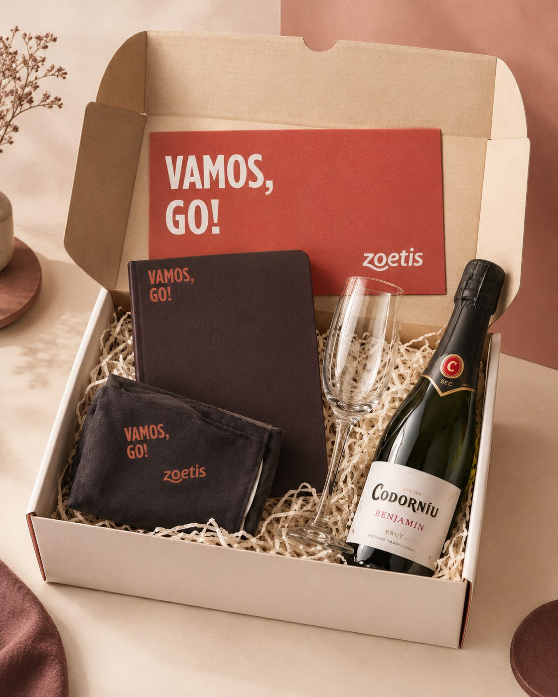
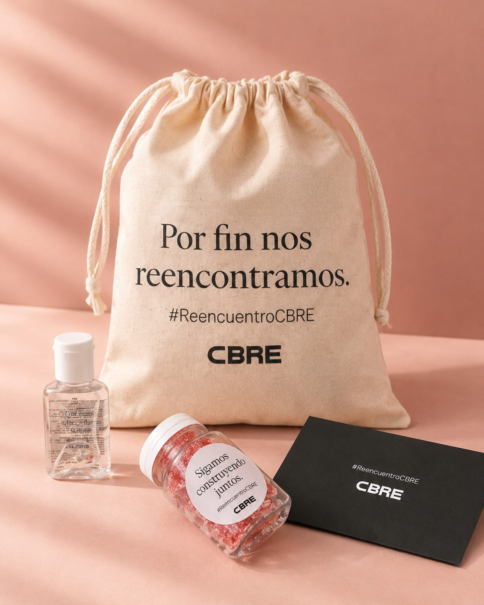
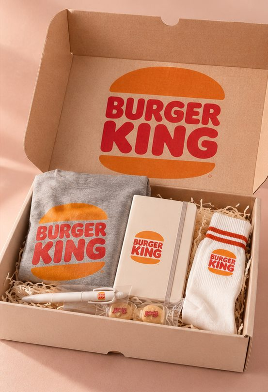
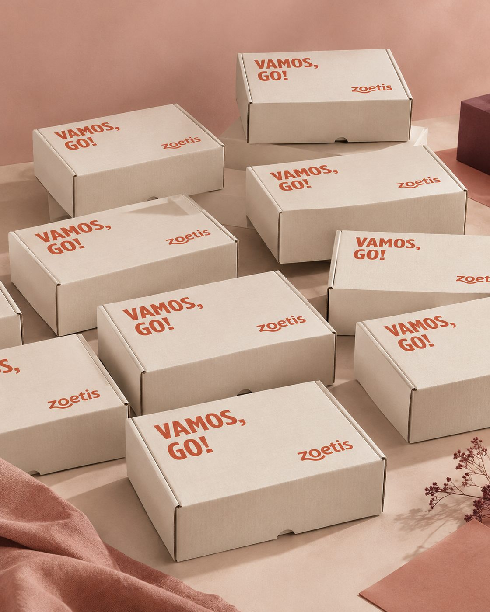
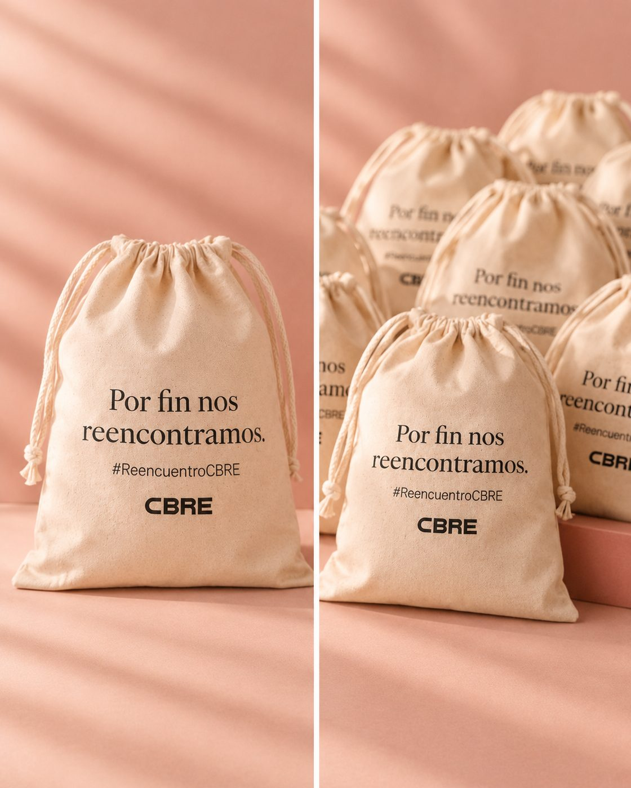
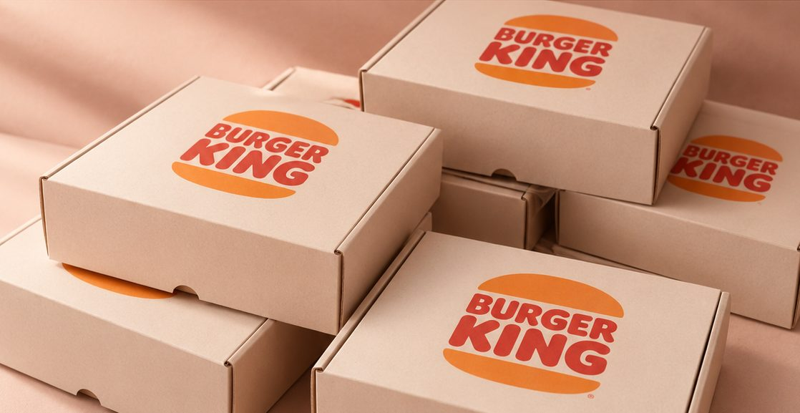

El kit que hace decir «oh, my».
Diseñamos y montamos a mano kits para lanzamientos, ferias, convenciones y campañas de marketing. Cada uno se piensa para una fecha concreta y no se vuelve a repetir.



Han confiado en nosotros
- [LOGO]
- [LOGO]
- [LOGO]
- [LOGO]
- [LOGO]
- [LOGO]
Kits con fecha en el calendario
Cada kit nace de un momento concreto de tu empresa.
-
Lanzamientos y presentaciones
Para prensa, clientes o tu propio equipo. El kit presenta la esencia de tu producto antes de que nadie lo haya probado.
Suele llevarCaja rígidaMuestra de productoCarta de presentación -
Ferias y congresos
Lo que la gente se lleva de tu stand, y lo que hace que se acuerden de vosotros al volver a la oficina.
Suele llevarBolsa de telaAlgo rico para picarTarjeta con QR -
Campañas de marketing
Envíos físicos a clientes o prospects que acompañan una campaña. Llegan a la mesa, no a la bandeja de spam.
Suele llevarCaja de envíoProducto protagonistaMensaje de campaña -
Welcome packs
Para una incorporación, un cliente nuevo o un partner con el que empezáis a trabajar.
Suele llevarCajaTazaLibretaNota de bienvenida
Lo bueno de un kit se elige antes de cerrar la caja.
Cada pieza se elige para una ocasión concreta.
Así se hace un kit
Tú nos cuentas la ocasión y nosotros nos encargamos del resto.
-
1
Nos cuentas el plan
Qué evento o campaña es, en qué fecha, cuántas personas van a recibir el kit y qué quieres que sientan al abrirlo.
-
2
Te proponemos el kit
Preparamos una propuesta con el contenido, el packaging y el presupuesto, y la ajustamos contigo hasta que encaje.
-
3
Lo montamos a mano
Cada caja se llena, se cierra y se revisa a mano, una a una.
-
4
Llega a tiempo
Lo entregamos donde haga falta para que esté listo el día de tu evento o el primer día de campaña.
Algunos kits
Cada uno se hizo para una ocasión distinta.



Cuéntanos qué tienes entre manos.
Con la fecha, el tipo de evento y cuántas personas lo van a recibir ya podemos preparar una primera propuesta.
¿Prefieres el correo? hola@ohmykit.com